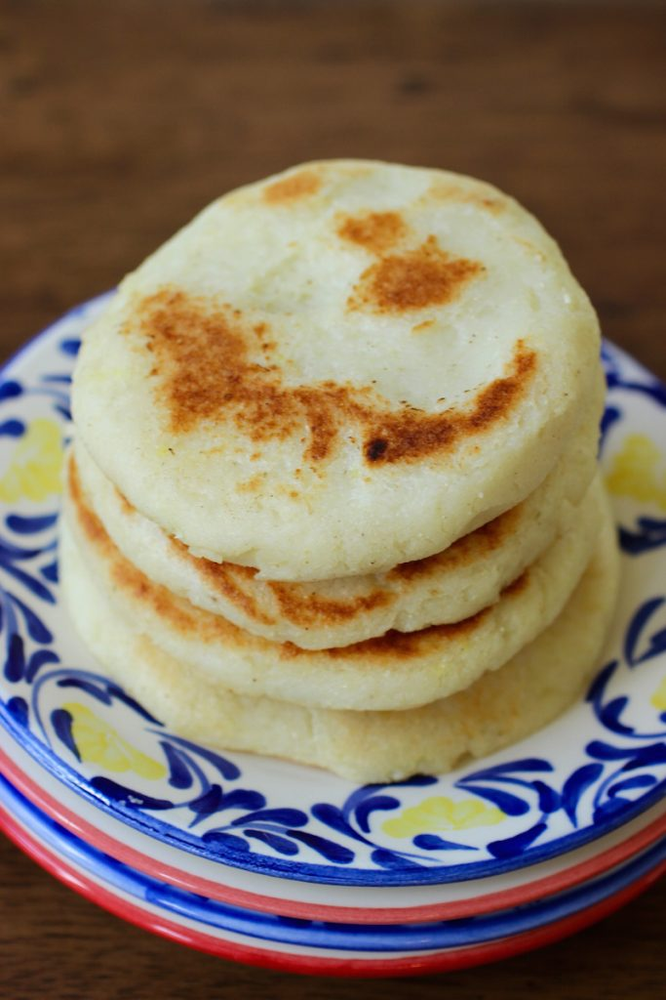

Colombian Arepas

Description
Arepa is a popular dish eaten in the northern region of South America. It's made of ground maize dough and can be served with cheese, meats, and/or avocado.
Ingredients
- 1 cup warm water
- 1 cup pre-cooked white corn meal
- 1 cup goat cheese
- 1 tbsp butter
- 1/2 tsp salt (or to taste)
- Cooking spray
Steps
- In a large bowl, mix water, corn meal, cheese, butter, and salt together.
- Knead the dough until it's mixed well and has a soft consistency.
- Form the dough into balls, then flatten with a rolling pin to your desired thickness.
- Coat a frying pan with cooking spray and set the heating element to medium-high heat.
- Place the pieces of flattened dough on the pan for about 5 minutes per side.
- Grill until each side is golden brown.
- Serve immediately and enjoy!